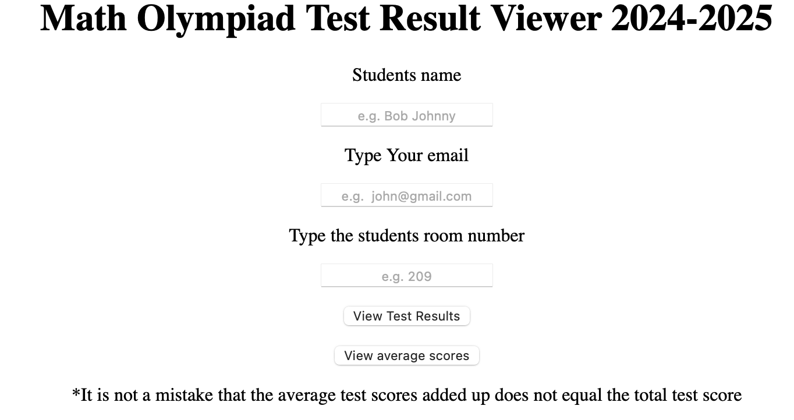
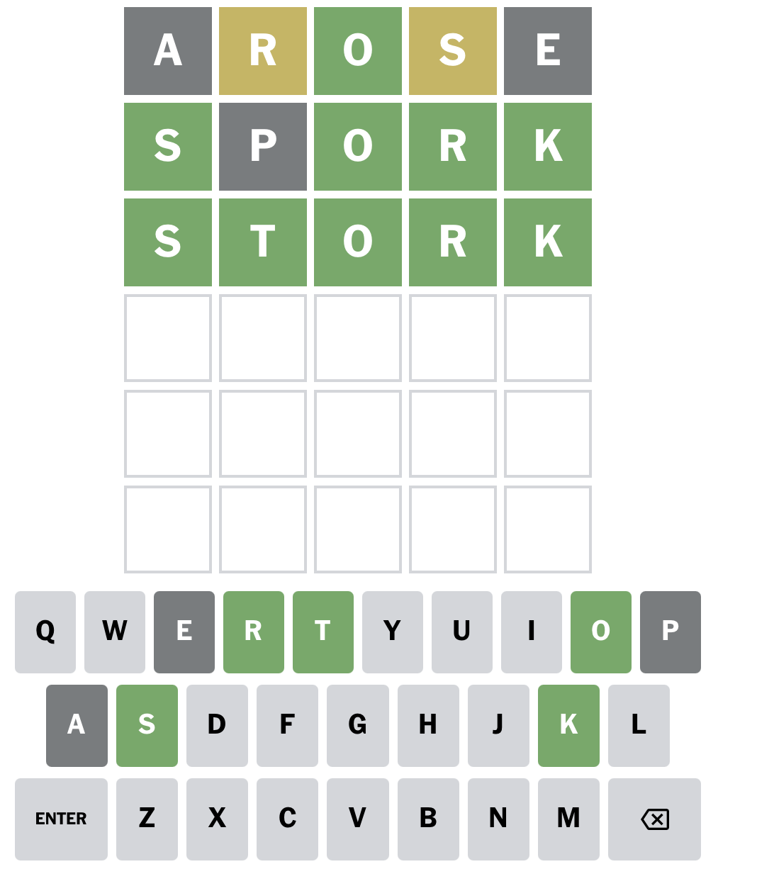

Adrian Yang
I like math, coding, and swimming
Here are my accounts: Github, Scratch, Youtube
My Best Projects
Old websiteThis is my old website that is not very well designed

Math olympiad websiteThis is a website I made to view your scores in math olympiad if you are in my elementary school

Wordle SolverThis is a wordle solver that can solve wordle games except you need specific requirements which i forgot so you cannot use it
Swim team analysisThis code helped my swim team (newark bluefins) choose who to go to the championship race
Awards
1st place in Math olympiad in both 2023 and 2024 in my school grade level(Forest Park Elementary School)
1st place in Breastroke in EBSL swimming championships 2023 (25 breaststroke and I got 18.42) and 2024 (50 breaststroke and I got 35.91)
3rd place in a programming competition in Rrooar coding competition with this
project
2nd place in Science Bowl in 2024 in my school (my team made it to the finals then we lost)
3rd place in individual CVJMT competition 2024 and 1st place in the team round(the problems were kind of unclear)